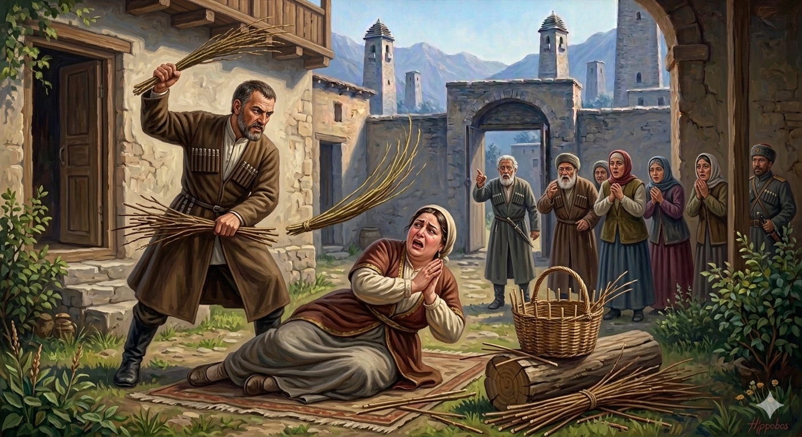

И.А. Дахкильгов. Хьехаме дувцарш - поучительные рассказы-притчи.
И.А. Дахкильгов. Хьехаме дувцарш - поучительные рассказы-притчи. Из ингушского фольклора.

Т1абаьхкараш т1ерабахар
Цхьана къонахчун сесаг ч1оаг1а мекъа хиннай. Ер де, вож де, аьлча, киловзал еш хиннай цо. Е корта, е дог дола оаг1ув хьалаьце, оалаш хиннад: “Оффай, сабараш т1абаьхкар шоана!” Т1аккха яхий д1аюжаш хиннай. Сискалах дика яжаш, тоаенна, ерста саг хиннай из. Цкъа хьунаг1ара саьргаш а дена, беша доа бе эттав къонах. Яха цунна юхе гударга т1а хайнай сесаг. Маро аьннад цунга: - Уж саьргаш хьакховда мукъа ду далар 1а. - Эшшехь, сабарделаш, сабараш т1абаьхкар шоана, - корта а лаьца, гударга юхе д1аежай из. Т1аккха марас ц1ог1а техад: - Малаш ба уж хьона т1аухараш? Укх сахьате аз лоахкаргба уж! 1оийккха сомаг1а бола саьрг хьаийца, из мадаггара бетта болабаьб. “Д1абахар уж, д1абахар уж”, - яхаш ц1ог1а детта йолаеннай сесаг. “Хьабараш д1абаха бале а, х1анз сабараш т1абаьхкаб”, - аьнна сесага дикка дарби даьд. Цу хана денна сесаго кхы хьоахабаьбац уж “т1абаьхкараш”, мекъал а т1ераяьлар цун.
РУССКИЙ
Изгнание напавших
У одного мужчины была очень ленивая жена-притворщица. Как только ей скажут, что нужно что-нибудь сделать, она тут же хваталась за голову или сердце и говорила: “Ой, на меня напало (болезнь напала)!” Но ела она сытно и была довольно-таки упитанной. Как-то муж привез прутья и стал в саду плести сапетку. От скуки жена подошла и села рядом на бревно. Муж сказал: - Ты хотя бы подай мне прутья. - Ой, на меня напало, - сказала жена и схватилась за голову, сползла с бревна и распласталась на земле. Тогда муж крикнул: - Кто это такие, которые на тебя нападают? Сейчас я их выгоню из тебя! – сказал он и вовсю начал лупить ее прутом. Жена не могла более терпеть боли и стала говорить: - Они покинули меня, хватит, не бей! - Тебя они покинули, но теперь они на меня напали и на меня нашло! – кричал муж и продолжал ее бить. С тех пор жена стала прилежно трудиться и про тех, что “нападали” ни словом уже не вспоминала.
ENGLISH
Driving Away the Attackers
A certain man had a very lazy wife who was a great pretender. As soon as she was told to do something, she would clutch her head or heart and cry, “Oh dear, I’ve been struck down by illness!” Yet she ate heartily and was quite well-fed. One day, her husband brought some twigs into the garden and began weaving a basket. Out of boredom, his wife came over and sat down on a log beside him. The husband said, ‘At least pass me the twigs.’ “Oh, I’m being attacked!” said the wife, clutching her head as she slid off the log and flopped onto the ground. The husband shouted, ‘Who are these people attacking you? I’ll drive them out of you right now!” He began beating her with the stick as hard as he could. Unable to bear the pain any longer, the wife began to cry out, ‘They’ve left me! Stop it! Don’t hit me!’ ‘They’ve left you, but now they’ve attacked me, and I’m possessed!’ her husband shouted, continuing to beat her. From then on, the wife worked diligently and never mentioned those who had 'attacked' her again.
НОХЧИЙН
Т1ебаьхкинарш т1ерабахар
Цхьана къонахчун зуда ч1ог1а мало йеш хилла. Х1ара де, важа де, аьлча, кийтарло йеш хилла цо. Йа корта, йа дог долу аг1о схьалоце, олуш хилла: “Оффай, санберш т1ебаьхкира шуна!” Т1аккха йоьде д1айуьжуш хилла. Сискалах дика йежаш, тойелла, йерстина стаг хилла иза. Цкъа хьуьнехьара серий а деан, бешахь до бан х1оьттина къонах. Йахна цунна йуххе гуьйриган т1е хиъна зуда. Майро аьлла цуьнга: - И серий схьакховда мукъане а ден делар ахь. - Эшшехь, собарделуш, санберш т1абаьхкир шуна, - корта а лаьцна, гуьйриган йуххе д1айижна иза. Т1аккха майро ц1ог1а тоьхна: - Муьлш бу уьш хьуна т1еоьхурш? Х1окху сахьта ас лохкур бу уьш! Охьаиккхина стоммах болу сара схьа а эцна, иза даггара бетта болийна. “Д1абахар уьш, д1абахар уьш”, - бохуш ц1ог1а детта йолайелла зуда. “Хьанберш д1абахна балахь а, х1инца санберш т1ебаьхкина”, - аьлла зудчунна дикка дарба дина. Цу хенахь дуьйна зудчо кхин хьахийна бац уьш “т1ебаьхкинарш”, мало а т1ерайелир цунах.
ПОГОВОРКИ